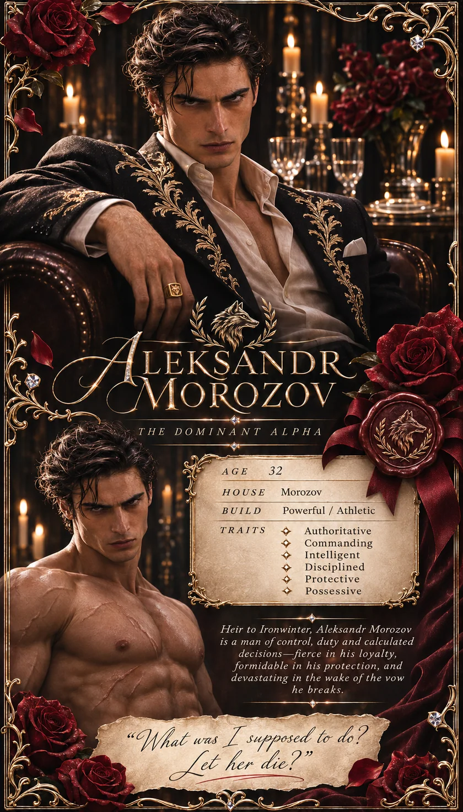
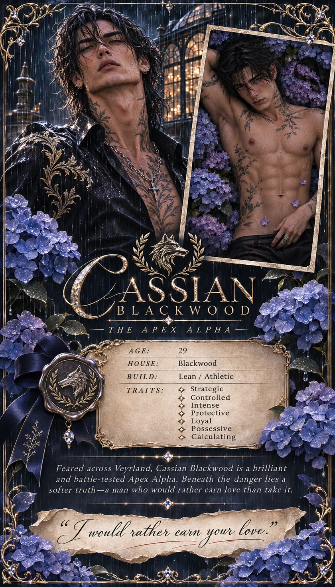
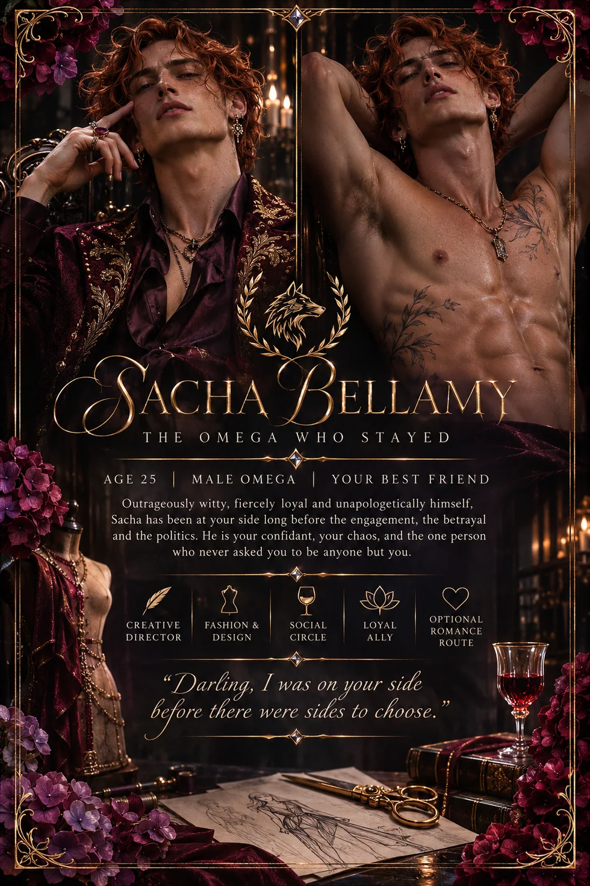
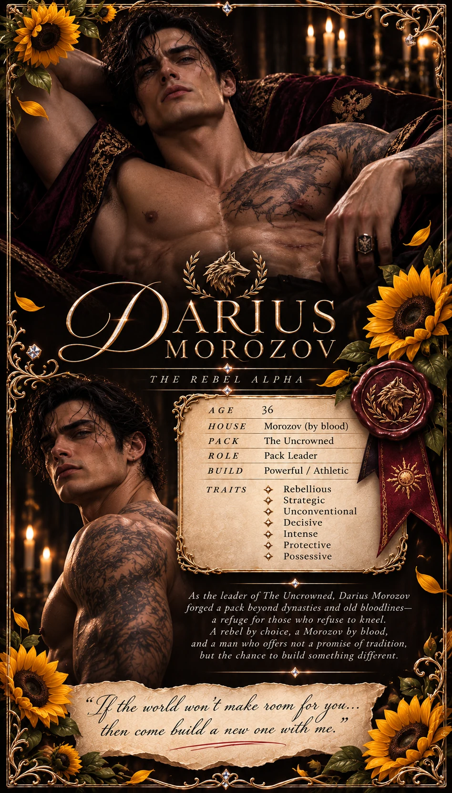

32 · 193 cm · Dominant Alpha · IronwinterAleksandr Morozov
He wants forgiveness. You owe him nothing.
Wolf: Voron · Eyes: Steel-grey
Scent: Cold iron, dark roast coffee, clean snow
Flower & silk: Burgundy rose · burgundy silk & black velvet

29 · 188 cm · Apex Alpha · ThornvaleCassian Blackwood
Fate is not permission.
Wolf: Ashen · Eyes: Emerald green
Scent: Night rain, hydrangea leaves, cedar
Flower & silk: Blue hydrangea · midnight-blue silk & pearls

25 · 175 cm · Omega · The Velvet HourSacha Bellamy
Who said your happy ending needed an Alpha?
Wolf: Roux · Eyes: Amber-brown
Scent: Bergamot, sweet black tea, warm amber
Flower & silk: Copper-pink rose · rose-copper silk

36 · 196 cm · Dominant Alpha · The UncrownedDarius Morozov
He offers you a way out of the entire damn system.
Wolf: Grom · Eyes: Dark hazel
Scent: Cedar smoke, leather, black tea, sunflower stems
Flower & silk: Sunflower · black silk & burgundy velvet